Vous n'êtes pas seuls dans l'Univers !

/
Afficheurs à LED : Circuits de pilotage - Page 3
Utilisation de circuits intégrés spécifiques.
Il existe des circuits intégrés spécifiques, qui sont dédiés au pilotage d'afficheurs à LED.
La plupart de ces circuits intégrés contient un dispositif de limitation du courant qui traverse les LED, ce qui permet des connexions directes, sans avoir recours à des résistances.
Ces composants s'interfacent généralement de façon sérielle avec des composants numériques programmables.
1) Le MAX7219 et le MAX7221
Les circuits intégré MAX7219 et MAX7221 sont fabriqués par la société MAXIM IC.
Ces deux circuits intégrés communiquent de manière sérielle avec le composant qui les contrôle.
1-1) Présentation
Cette partie montre les possibilités du circuit intégré MAX7219.
Le circuit intégré MAX7221 a un fonctionnement similaire, mais il diffère par son interfaçage et par son optimisation quant à la réduction des perturbations électromagnétiques qu'il génère.
La datasheet des pilotes de LED « MAX7219 » et « MAX7221 » :
 http://datasheets.maximintegrated.com/en/ds/MAX7219-MAX7221.pdf
http://datasheets.maximintegrated.com/en/ds/MAX7219-MAX7221.pdf
1-2) Essais avec deux afficheurs 7 segments
Les circuits intégrés MAX7219 et MAX7221 sont capables de décodes des donnés; hexadécimales qui leurs sont envoyées, en vue de les faire apparaître sur des afficheurs 7 segments.
Ce décodage suit le « Code B » , qui consiste à décoder les chiffres de « 0 » à « 9 » , ainsi que des symboles spéciaux qui sont le tiret « - » , les lettres « E » , « H » , « L » et « P » , et l'espace.
Le lien entre les symboles et leurs codes associés est explicité ci-dessous.

Attention ! Pour être utilisés avec un, ou plusieurs afficheurs 7 segments, les circuits intégrés MAX7219 et MAX7221 nécessitent l'emploi d'afficheurs à cathode commune.
Les programmes qui utilisent le pilote de LED MAX7219 utilisent une carte de type « STM32DISCOVERY ».
Pour plus d'informations à propos de ces cartes, ouvrez ce lien.

Remarque : Le microcontrôleur utilisé est alimenté par une tension de + 3,3 V, qui est générée sur la carte de développement « STM32DISCOVERY ».
Le circuit intégré MAX7219 est alimenté par une tension de + 5 V.
Bien qu'il reçoive, de la part du microcontrôleur, des signaux de commande qui varient entre 0 V et + 3,3 V, il fonctionne correctement, car il est prévu pour s'interfacer avec des composants alimentés sous une tension de + 3,3 V.
{kind=link}
| 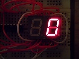 | 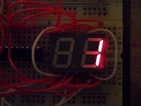 | 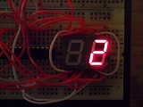 | 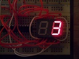 |
| 0x00 | 0x01 | 0x02 | 0x03 |
| 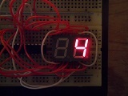 | 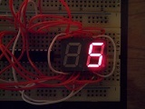 | 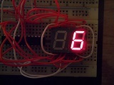 | 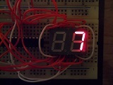 |
| 0x04 | 0x05 | 0x06 | 0x07 |
| 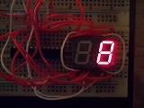 | 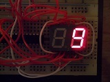 | 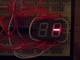 | 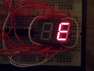 |
| 0x08 | 0x09 | 0x0A | 0x0B |
| 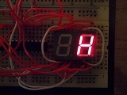 | 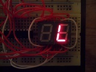 | 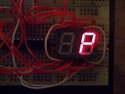 | 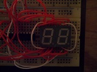 |
| 0x0C | 0x0D | 0x0E | 0x0F |
{kind=link}
{kind=link}
{kind=link}
{kind=link}
{kind=link}
{kind=link}
{kind=link}
{kind=link}
{kind=link}
{kind=link}
{kind=link}
{kind=link}
{kind=link}
{kind=link}
{kind=link}
{kind=link}
{kind=link}
{kind=link}
Remarque : La fonction de test des afficheurs des circuits intégrés MAX7219 et MAX7221 active les huit afficheurs, même si ces circuits intégrés ont été configurés pour ne piloter que deux afficheurs, comme ici.
C'est pour cela que l'affichage apparaît comme moins lumineux.
Le circuit intégré active les sorties qui sont prévues pour les afficheurs numéro 0 à 1, et qui sont effectivement connectés, pendant les 2 / 8 du temps, et les sorties qui sont prévues pour les afficheurs numéro 2 à 7, et qui ne sont pas connectés, pendant les 6 / 8 du temps restant.
| 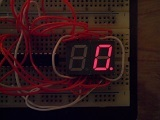 | 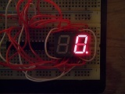 | 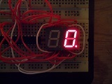 |
| 0x00 | 0x0E | 0x0F |
{kind=link}
{kind=link}
{kind=link}
{kind=link}

Circuit intégré MAX7219 et afficheurs 7 segments : Schéma électronique
Logiciel de dession de schémas électroniques : EAGLE 6.4.0
Télécharger le fichierEffectuez un clic droit, puis sélectionnez l'option « Enregistrer la cible du lien sous... », pour télécharger le fichier (145.62 Ko)
Correspondances entre les broches de la carte « STM32DISCOVERY » , et le montage de test du pilote de LED MAX7219 :
| Carte « STM32DISCOVERY » | +5V | GND | PA0 | PA5 | PA7 |
|---|---|---|---|---|---|
| Montage de test du pilote de LED MAX7219 | VCC | GND | LOAD_MAX7219 | CLK_MAX7219 | DIN_MAX7219 |
Circuit intégré MAX7219 et afficheurs 7 segments : Fichiers C
Cible : STM32F100RB
Compilateur : Keil µVision 4
Télécharger le fichierEffectuez un clic droit, puis sélectionnez l'option « Enregistrer la cible du lien sous... », pour télécharger le fichier (17.81 Ko)
1-3) Essais avec une matrice de 64 LED
{kind=link}
{kind=link}
| 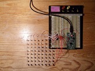 | 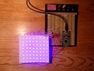 | 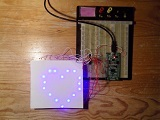 |
| 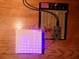 | 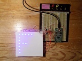 |
{kind=link}
{kind=link}
{kind=link}
{kind=link}
{kind=link}
{kind=link}
Circuit intégré MAX7219 et matrice de 64 LED : Schéma électronique
Logiciel de dession de schémas électroniques : EAGLE 6.4.0
Télécharger le fichierEffectuez un clic droit, puis sélectionnez l'option « Enregistrer la cible du lien sous... », pour télécharger le fichier (297.83 Ko)
Circuit intégré MAX7219 et matrice de 64 LED : Fichiers C
Cible : STM32F100RB
Compilateur : Keil µVision 4
Télécharger le fichierEffectuez un clic droit, puis sélectionnez l'option « Enregistrer la cible du lien sous... », pour télécharger le fichier (19.26 Ko)
2) Le TLC5940
Le circuit intégré TLC5940 est fabriqué par la société TEXAS INSTRUMENTS.
2-1) Présentation
Ce circuit intégré communique par une liaison sérielle avec le composant qui le gère.
Il permet le pilotage d'afficheurs à LED avec une variation de l'intensité lumineuse sur 12 bits, soit sur 4096 niveaux.
Cela autorise l'utilisation d'afficheurs bicolores ou multicolores.
La datasheet du pilote de LED « TLC5940 » :
http://www.ti.com/lit/ds/symlink/tlc5940.pdf
Commentaires (0)
Ajouter un commentaire